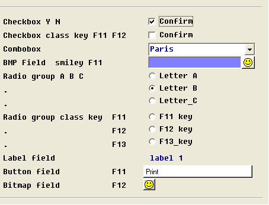
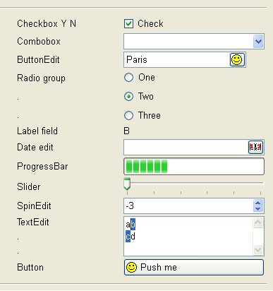

This page describes product changes you must be aware of when migrating from Four Js BDS 3.xx to the most recent Genero BDL version.
Summary:
With Four Js BDS, you must license the product with the licencef4gl command line tool. Starting with Genero, the command line tool to license the product is fglWrt. Run fglWrt with the -h option for the possible options.
With Four Js BDS, you need to create the fglrun binary with the fglmkrun tool, by specifying the type of the database driver and C Extensions libraries to be linked with the runtime system. Since Genero 2.00, fglrun dynamically loads both database drivers and C extension libraries at runtime.
When migrating to Genero BDL, you must review your C Extensions to provide them as shared libraries. To easy migration, Genero searches automatically the userextension share library (or DLL). See C Extensions for more details.
The database drivers are provided as shared libraries ready to use; you just need to specify the driver to be loaded. See Connections for more details.
To support language-specific and country-specific locales as well as multi-byte character sets like BIG5, Informix 4GL and Four Js use the Informix GLS library. That solution was straightforward in the context of an Informix database platform. But if you want to connect with BDS to an Oracle server, using a BIG5 locale for the BDS application, you need to install the Oracle DB client to connect to the database, and Informix DB client to get the GLS library.
Like BDS, Genero supports the Open Database Interface to access other database servers as Informix. But concerning locale support, Genero does not use the Informix GLS library any longer, to be independent from Informix. Genero uses the standard C library locale functions, based on the POSIX setlocale() implementation provided by the operating system.
While I4GL/BDS need the CLIENT_LOCALE environment variable to define the locale for the application, you must now use the LANG/LC_ALL environment variables to specify the locale of the Genero application. Note, however, that CLIENT_LOCALE is still needed when connecting to an Informix database.
In Four Js BDS, you could select the locale library with the fglmode tool, to select either GLS or ASCII mode. This tool is no longer needed in Genero.
For more details about locale support, see Localization.
Before compiling .4gl or .per files with Four Js BDS, you need to extract the database schema with the fglschema tool. This will produce .sch, and optionally, .val and .att files.
Genero also needs the database schema files to compile programs and forms, but the tool name is now fgldbsch. The fglschema tool could only extract schemas from Informix databases. The new tool can extract database schemas from Informix, and from other databases like Oracle, SQL Server, DB2, PostgreSQL, MySQL and Genero db. The fglschema tool is still supported in Genero for backward compatibility, but fglschema actually calls fgldbsch. You should use fgldbsch now, with the new command line options.
Note that Genero allows you to centralize new widget types and attributes in the .val file.
For more details about fgldbsch, see the Database Schema page.
Four Js BDS fglcomp could compile to p-code or c-code. For now Genero does not support C-Code generation (the P-Code interpreter is fast).
If you experience performance problems when comparing Genero to Four Js BDS, please contact your local support center.
The table below lists the Four Js BDS environment variables which are no longer supported or replaced by others in Genero:
| Entry | Description of the BDS environment variable | Genero equivalent |
| FGLDBS | FGLDBS defines the type and version of the database driver, used when linking fglrun with fglmkrun. |
This is not needed any longer in Genero: Database drivers are loaded dynamically by fglrun. |
| FGLCC | FGLCC defines the name of the C compiler. |
This is not needed any longer in Genero: The fglrun tool does not need to be created, it's fully dynamic. |
| FGLLIBSQL | FGLLIBSQL defines the list of database client software libraries to be used to link fglrun with fglmkrun. | |
| FGLLIBSYS | FGLLIBSYS defines the list of system libraries to be used to link fglrun with fglmkrun. | |
| FGLSHELL | FGLSHELL defined the name of the fglrun program, for example when using tools like fglschema. |
This is not needed any longer in Genero: The runtime system tool is fglrun and does not need to be changed. |
Genero comes with redesigned software components and features, especially regarding GUI. Thus, some BDS/WTK specific FGLPROFILE entries have been de-supported. This section describes what configurations settings are no longer supported, and point to Genero equivalent features if they exist.
For more details, see:
This topic also concerns Informix 4gl migration, see the I4GL Migration page for mode details.
When migrating to Genero BDL, you must use one of the Genero Front Ends; the WTK, WebFE and JavaFE front-ends are not compatible with the Genero fglrun runtime system. Note also that the UNIX version of Genero does not include the fglX11d front-end any longer. You must use the GDC front-end on Unix.
In Four Js BDS, when the FGLGUI environment variable is not set, the application starts in TUI mode (FGLGUI=0). With Genero, the default is GUI mode (FGLGUI=1). Therefore, when migrating from Informix 4gl, you should set FGLGUI=0 to run the application in text mode as a first step.
The next table shows BDS/WTK FGLPROFILE entries related to GUI configuration which are de-supported in Genero. See FGLPROFILE description page for supported entries:
| Entry | Description of the BDS feature | Genero equivalent |
| fglrun.interface fglrun.scriptName |
These entries defined the TCL configuration and script to be send to the WTK front-end. | There is no equivalent in Genero. |
| fglrun.guiProtocol.* | These entries could be used to configure the communication protocol with WTK front-end. | In Genero you can control this with gui.protocol entries. |
| fglrun.error.line.number | This entry was used to define the number of lines to be displayed in the error message line. | You can control the aspect of the error line with the Window style attribute called statusBarType. |
| gui.useOOB.interrupt fglrun.signalOOB |
These entries could be used to configure or
disable Out Of Band signal on the GUI protocol socket to avoid problems on
platforms not supporting that feature. OOB signal was used to send interruption events the program executed is processing. |
Genero supports interruption event
handling with a predefined action name called interrupt. You can
bind any sort of action view (button in form, toolbar or topmenu item)
with this name. Interrupt events are sent asynchronously with the new Genero GUI protocol and don't use OOB signals any longer. See Interaction Model for more details. |
| Sleep.minTime | This entry was used to define the number of seconds before the interrupt key button appeared on the screen window when the program is processing. | |
| gui.watch.delay | This entry was used to define the number of seconds before the mouse cursor displays as a wait cursor, when the program is processing. | |
| gui.bubbleHelp.* | These entries could be used to enable and configure tooltips displaying field COMMENT text. | Genero front-ends display bubble-help with field COMMENT text by default. |
| gui.controlFrame.scroll.* | These entries could be used to show and configure a scrollbar in the control frame displaying ON KEY or COMMAND buttons. | Genero front-ends display control frame
scrolling buttons by default when needed. See also Window style attributes like ringMenuScroll. |
| screen.scroll | This entry could be used to get scrollbars in the main window when the form was too big for the screen resolution of the workstation. | With Genero, by default, each program window is rendered as a distinct GUI window by the front-end. Window aspect can be controlled with style attributes. See Window style attributes for more details. |
| gui.screen.size.x gui.screen.size.y gui.screen.x gui.screen.y gui.screen.incrx gui.screen.incry |
These entries could be used to configure the size and position of the main screen window with the WTK front-end. | In Genero, each program window is rendered as a distinct GUI window by the front-end. There is no equivalent for these options. However, you can use the traditional mode to render program windows in a single parent screen window and with BDS/WTK. |
| gui.screen.withvm |
This entry could be used to integrate with the X11 window manager (allowing move and resize actions). | There is no equivalent in Genero. |
| gui.preventClose.message | This entry could be used to display an error message to the user attempting to close the main GUI window with CTRL-F4 or the cross-button on the right of the GUI window title bar. | In Genero, each program window is rendered as a
distinct GUI window by the front-end. You can use the close action
to control window close events. See Interaction Model for more details. See also ON CLOSE APPLICATION program option. |
| gui.key.doubleClick.left | This entry could be used to define the key to be returned to the program when the user double-clicks on the left button of the mouse. | You can use the DOUBLECLICK attribute to define the action to be fired when the user double-clicks on a Table container. |
| gui.key.click.right | This entry could be used to define the key to be returned to the program when the user clicks on the right button of the mouse. | You can configure contextual menus with the contextMenu attribute in Action Defaults. |
| gui.key.add_function | Could be used to define the offset to identify SHIFT+Fx keys. | There is no equivalent in Genero. |
| gui.key.x.translate | These entries could be used to map keys. For example, when the user pressed Control-U, it could be mapped to F5 for the program. | There is no equivalent in Genero. |
| gui.key.radiocheck.invokeexit | Could be used to define the key to select the RADIO or CHECK field and move to the next field. | There is no equivalent in Genero. |
| gui.mswindow.button | This entry defined the aspect of buttons on Windows platforms. | There is no equivalent in Genero: Front-ends will use the current platform theme when possible. |
| gui.mswindow.scrollbar | Could be used to get MS Windows scrollbar style. | There is no equivalent in Genero: Front-ends will use the current platform theme when possible. |
| gui.scrollbar.expandwindow | When set to true, the WTK front-end expanded the window automatically if scrollbars are needed in a screen array. | There is no equivalent in Genero. |
| gui.fieldButton.style | Could be used to define the style of BMP field buttons. | There is no equivalent in Genero. |
| gui.BMPbutton.style | Could be used to define the style of FIELD_BMP field buttons. | There is no equivalent in Genero. |
| gui.entry.style | This entry defines the underlying widgets to be used to manage form fields. | There is no equivalent in Genero. |
| gui.user.font.choice | This entry could be set to true to let the end user change the font of the application screen window. |
Genero front-ends allow the user to change the font. See front-end specific documentation for option configuration. |
| gui.interaction. inputarray.usehighlightcolor |
This entry could be used to highlight the current row during an INPUT ARRAY. | Current row highlighting can be controlled in Genero with the Table style attribute highlightCurrentRow. |
| gui.form.foldertab.multiline gui.folderTab.input.sendNextField gui.folderTab.x.selection |
These entries could be used to configure folder tabs and define the keys to be sent when a page is selected by the user. | Genero supports folder tabs with the FOLDER container in LAYOUT. An action can be defined for each folder PAGE. |
| gui.keyButton.position gui.keyButton.style gui.button.width |
These entries could be used to define the aspect of control frame buttons associated to ON KEY actions in dialogs like INPUT. | Default action views aspect and position can be controlled with Action Defaults attributes and with Window style attributes. |
| Menu.style gui.menu.timer gui.menu.horizontal.* gui.menu.showPagerArrows gui.menuButton.position gui.menuButton.style |
These entries could be used to define the aspect of control frame buttons associated to COMMAND [KEY] actions in MENU. | Default action views aspect and position can be controlled with Action Defaults attributes and with Window style attributes. |
| gui.empty.button.visible | This entry could be used to hide control frame buttons without text. By default, the empty buttons are visible but disabled. | Default action views aspect can be controlled with Action Defaults attributes. Use for example the defaultView attribute to display a default button for an action. |
| gui.containerType gui.containerName gui.mdi.* |
These entries could be used to configure MDI Windows in BDS. | To define MDI containers and children in Genero,
use the ui.Interface methods. See MDI Windows for more details. |
| gui.toolBar.* | These entries define the toolbar aspect in BDS. |
Toolbar definition has been extended in Genero. See ToolBars for more details. |
| gui.statusBar.* | These entries define the status aspect in BDS. |
The StatusBars are defined with Window presentation style attributes. See Presentation Styles for more details. |
| gui.directory.images | This entry defines the path to the directories where images (toolbar icons) are located, on the front-end workstation. | See front-end documentation for image files located on the workstation. With Genero, image files can be located on the application server and automatically transmitted to the front-end according to the FGLIMAGEPATH environment variable. |
| gui.display.<source> | These entries could be used to redirect the ERROR / MESSAGE / COMMENT text to a specific place on the GUI screen. |
The rendering of ERROR, MESSAGE or COMMENT can be configured with Window
style attributes in Genero. However, it is not possible to customize
keyboard NumLock / CapsLock status in Genero. See Presentation Styles for more details. |
| gui.local.edit gui.local.edit.error gui.key.cut gui.key.copy gui.key.paste |
These entry could be used to enable and configure cut/copy/paste local keys in WTK. |
Cut/Copy/Paste are defined as front-end local actions in Genero. You can
bind action views with editcut, editcopy, editpaste
predefined action names. See Interaction Model for more details. |
| gui.key.* | These entries were used to map physical key to
a a virtual key used in programs. For example: gui.key.interrupt = "control-c" |
Cut/Copy/Paste are defined as front-end local actions in Genero. You can
bind action views with editcut, editcopy, editpaste predefined action
names. See Interaction Model for more details. |
| gui.workSpaceFrame.nolist | This entry could be used to define the aspect of fixed size screen arrays in forms, to render each array cell as an individual edit field. | There is no equivalent in Genero. |
In Four Js BDS, you could define a text for a specific key like accept, F10 or Control-Z. With this feature, it was possible to easily decorate ON KEY or COMMAND KEY blocks with a button in the control frame.
With Genero, you can now define dialog actions with the ON ACTION blocks. These action handlers are more abstract than ON KEY: You identify an action by a name, while decoration is defined in form files (ACTION DEFAULTS section) or in global configuration files (.4ad file).
When adapting your code for Genero, you are free to use the traditional ON KEY blocks or the new ON ACTION blocks. Genero still supports the key label settings as in Four Js BDS. Note however that key label settings will overwrite action defaults settings.
See also Interaction Model for more details about action handlers and action views.
To get combo-boxes or check-boxes in Four Js BDS, .per forms could define fields with the WIDGET attribute. To ease migration, the WIDGET attribute and the corresponding form field widgets are still supported in Genero, but these are now deprecated: You should use new Genero form item types instead.
Screenshot of Four Js BDS-specific widgets:

The following table shows new Genero form item types corresponding to old BDS WIDGET fields:
| WIDGET= | Description | Genero equivalent |
| WIDGET="Canvas" | Drawing area for fgldraw functions | CANVAS item type |
| WIDGET="BUTTON" | Text push button firing key event | BUTTON item type |
| WIDGET="BMP" | Image push button firing key event | BUTTON item type |
| WIDGET="CHECK" | Checkbox field | CHECKBOX item type |
| WIDGET="CHECK" + CLASS="KEY" |
Checkbox field firing key event | CHECKBOX item type + ON CHANGE trigger in program |
| WIDGET="COMBO" | Combobox field | COMBOBOX item type |
| WIDGET="FIELD_BMP" | Edit field with push button | BUTTONEDIT item type |
| WIDGET="LABEL" | Label field (no input) | LABEL item type |
| WIDGET="RADIO" | Radio group field | RADIOGROUP item type |
| WIDGET="RADIO" + CLASS="KEY" |
Radio group field firing key event | RADIOGROUP item type + ON CHANGE trigger in program |
Genero introduced more form item types like DATEEDIT, PROGRESSBAR:

For more details, see form item types.
This topic also concerns Informix 4gl migration, see the I4GL Migration page for mode details.
This topic also concerns Informix 4gl migration, see the I4GL Migration page for mode details.
This topic also concerns Informix 4gl migration, see the I4GL Migration page for mode details.
This topic also oncerns Informix 4gl migration, see the I4GL Migration page for mode details.
This topic also concerns Informix 4gl migration, see the I4GL Migration page for mode details.
Four Js BDS provided WTK front-end and X11 front-end specific configuration tools called "Configuration Manager" / confdesi. These tools could be used to define widget aspect (color, borders, fonts).
In Genero, the form items can be decorated with Presentation Styles for all sorts of front-ends.
With Four Js BDS, when the user pressed a key modifier plus a function key (like Shift-F4 or Control-F6), the key combination was mapped to a regular function key F(n+offset), because Shift and Control key modifiers are not handled in the 4GL language. The number of function keys of the keyboard was defined by the gui.key.add_function FGLPROFILE entry. For example, when this entry is set to 12 (the default), a Shift-F4 was received as F16 (4 + 12) in the program.
This feature and FGLPROFILE entry is still supported by Genero when using the traditional mode.
Genero comes with redesigned software components and features. Some BDS/WTK specific FGLPROFILE entries have been de-supported. This section describes what configurations settings are no longer supported, and point to Genero equivalent features if they exist.
The following table shows BDS FGLPROFILE entries related to runtime system configuration which are de-supported in Genero. See the FGLPROFILE description page for supported entries:
| Entry | Description of the BDS feature | Genero equivalent |
| fglrun.checkDecimalPrecision | Controls decimal variable assignment when
overflow occurs. For example, a value of 1000.0 does not fit in a
DECIMAL(2,0). Is false by default = no overflow error, value assigned. |
There is no equivalent in Genero. By default Genero assigns NULL to a decimal when overflow occurs. Can be trapped by WHENEVER ANY ERROR. |
| fglrun.ix6 | Controls Informix version 6.x compatibility. By default BDS is compatible with I4GL 4.x |
There is no equivalent in Genero. By default Genero is compatible to Informix 4gl 7.32. |
| fglrun.cmd.winnt fglrun.cmd.win95 |
Defines the command line to be executed for a RUN WITHOUT WAITING on Windows platforms. | With Genero the command program can be defined with the COMSPEC environment variable. |
| fglrun.database.listvar fglrun.remote.envvar |
Was used by Informix driver to set environment variables with the ifx_putenv() function on Windows platforms. | There is no equivalent in Genero. |
| fglrun.setenv.* fglrun.defaultenv.* |
These entries could be used to define environment variables for all programs. | There is no equivalent in Genero. |
| fgllic.* | License controller related entries |
With Genero you configure license settings with the flm.*
entries. See license manager documentation for more details. |
| fglrun.server.* | These entries could be used to define X11 front-end automatic startup. |
In Genero this can be configured with gui.server.autostart.*
entries. See automatic front-end startup for more details. |
Four Js BDS provided a few utility functions in the libfgl4js.42x library. This library had to be initialized with a call to fgl_init4js():
01MAIN02...03CALL fgl_init4js()04...05END MAIN
Genero still supports the fgl_init4js() function, but only for backward compatibility. Calling this function has no effect in Genero.
This topic also concerns Informix 4gl migration, see the I4GL Migration page for more details.
This topic also concerns Informix 4gl migration, see the I4GL Migration page for more details.
The FGL_SYSTEM() function is still supported, but it does not raise a terminal window on the front-end as with BDS/WTK. However, some front-ends implement a workaround for this feature, based on the detection of special strings displayed to stdout by fglrun. See front-end documentation for more details.
Genero provides file, socket and process I/O with the Channel built-in class, while Four Js BDS has the Channel:: functions. You must review your code and replace Channel:: calls with the new API.
This topic also concerns Informix 4gl migration, see the I4GL Migration page for mode details.
This topic also concerns Informix 4gl migration, see the I4GL Migration page for mode details.
This topic also concerns Informix 4gl migration, see the I4GL Migration page for mode details.
This topic applies also to older Genero versions, see the Genero 2.20 Migration page for more details.
With older Four Js BDS versions like 2.10, expression evaluation errors such as a division by zero stop the program with an error message. Genero behaves like Informix 4gl and recent Four Js BDS versions like 3.55: By default, the WHENEVER ANY ERROR action is to CONTINUE the program flow. You can change this behavior by setting the next FGLPROFILE entry to true:
fglrun.mapAnyErrorToError = true
See Exceptions for more details.